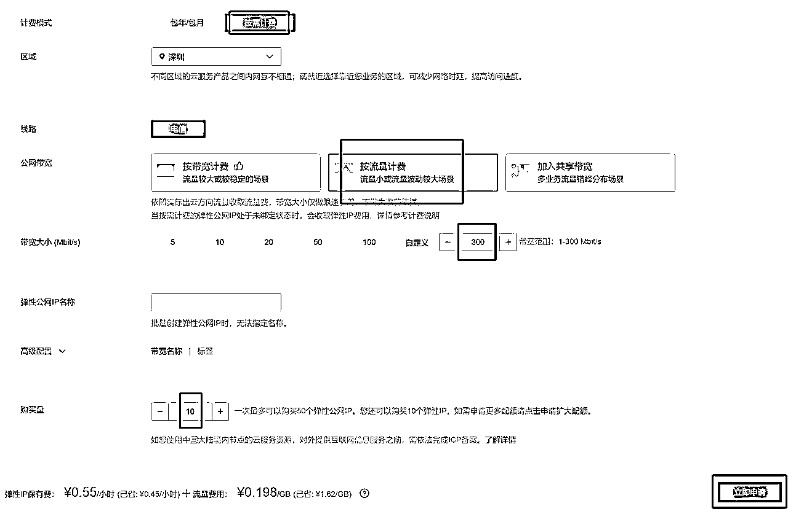
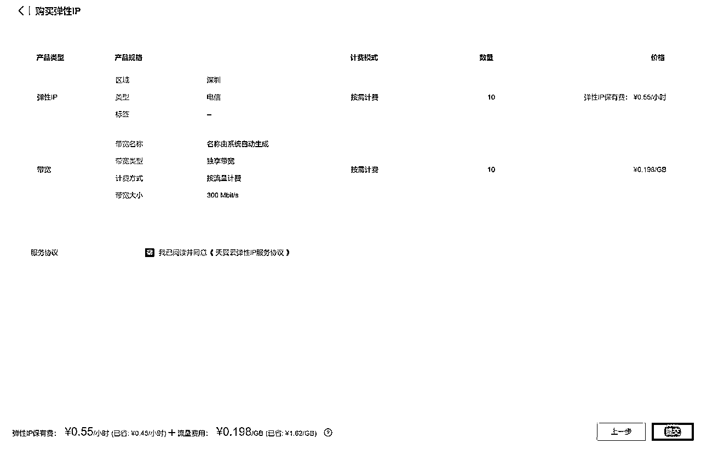
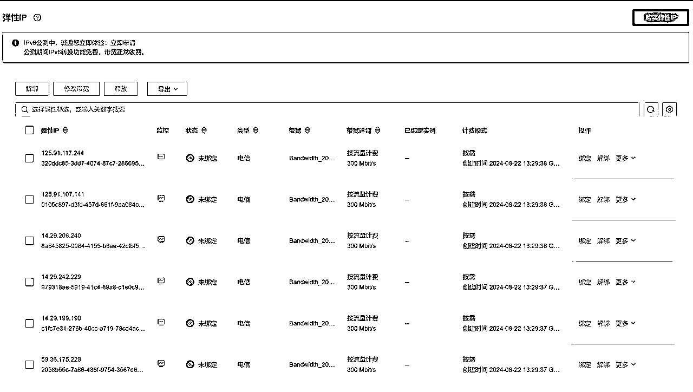
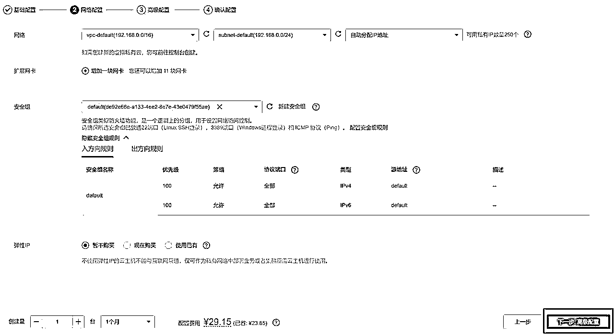
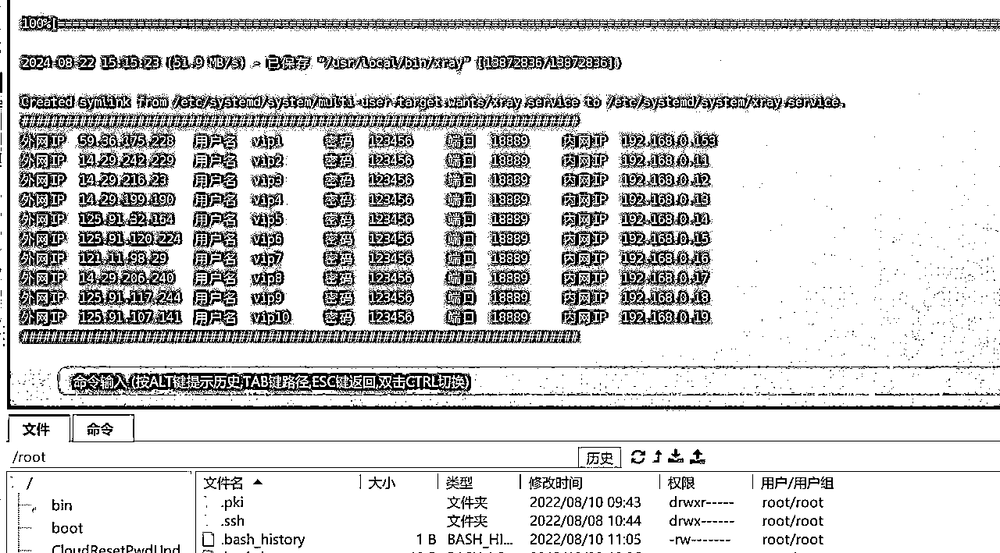

天翼云SK5的搭建SOP（保姆级）
来源：https://si7o8nqh3o3.feishu.cn/docx/QhrOdapB7onoQZxr33WcbfAfnYb
大家好，我是千韭、一个喜欢捣鼓黑科技的人，不知道大家有没有听说过SK5！可能用它的人、或者知道它的人比较少，因为它是通过服务器来搭建的，之前有生财的圈友分享过，网上也有很多关于这方面的教程，但一步步的图文教程可能没有，所以我把它实操了一遍，并且记录下来每个步骤，我先来简单介绍下它的用途。
- 主要用于自媒体矩阵上，让每个账号的IP进行独立。
- 可在电脑上使用、也可用于安卓手机。
- 市面上一般较少人卖，也基本找不到卖的地方，1条SK5的零售价大概在20-40元/月。
- 做公众号矩阵、抖音矩阵、小红书矩阵的，使用频率比较高。
通过以上的介绍，相信大家对SK5有了一定的基本了解，那么接下来，我要说的是如何通过低成本的价格来搭建SK5，没错！就是通过天翼云服务器，如果你是正常注册天翼云的话，是没有折扣价的，但是如果通过代理商注册的话，折扣是能够达到0.45 - 0.55的，如果你需要，可以找我要链接，接下来我把步骤拆成SOP、大家可以按照SOP进行操作即可搭建完成。
一、注册账号
关于注册账号，比较简单、直接通过代理商的链接进行手机注册，基本3秒搞定！注册完毕以后需要实名认证和充值100元（随时可退）、因为购买服务器的前提是账户余额得有100元才可以购买，全部搞好以后告知代理商给调整折扣，等待调整完毕即可。
二、购买弹性IP
- 在最顶部的导航栏中点击打开【控制中心】
- 找到【弹性公网IP】点击打开
- 选择需要购买IP的地区、每个地区仅可购买10条IP，注意链接必须包含【console2】的才允许搭建SK5、点击【购买弹性IP】进入购买界面。

- 计费模式选择【按需计费】、公网宽带选择【按流量计费】、宽带大小填入【300】、购买量【10】条。

- 点击【立即申请】后进入确认界面，确认无误后点击【提交】即可。
- 页面会跳转到最初的界面，等待1分钟、点击刷新按钮即可。

- 正常购买成功后点击【刷新】按钮后会出现购买的IP即代表购买成功，如果出现IP数量不足10条，那么就是因为当前IP数不足，可以换个时间再去购买。
三、购买弹性云主机
接下来就是需要购买云主机，这里需要注意的是需要选择和自己购买的IP同一个地区，像我购买的IP是深圳的，那么这里我还是要选择深圳，还要注意URL链接是否包含【console2】、因为只有包含才可以用于搭建SK5，切记！

- 在最顶部的导航栏中点击打开【控制中心】
- 点击【弹性云主机】进入后点击【创建弹性云主机】
- 进入购买界面后，有两种计费模式，实例类型和镜像按照红框选择即可，其他选项不变，点击【下一步：配置网络】
- 包年/包月：如果你能够长期用的话，考虑切换成包月！相对按需计费来说，更划算些。另外不建议按年、因为如果你后期想要更换IP、退款处理会比较繁琐。
- 按需计费：如果你做的行业比较容易封号的，那么建议你用该计费模式，因为删除更换非常灵活，但价格上比包月要稍贵，不过后期也可以切换成包月，这个看自己的需求了。

- 进入网络配置界面，这里默认即可，不需要做改动，直接点击【下一步：高级配置】
- 进入高级配置页面后，修改云主机名称、可随意自定义命名，这里的root里的密码一定要设置自己能记住的，因为后面会用到，其他设置不改变，点击【下一步：确认配置】
- 确认下配置信息，自动续费可勾可不勾，看自己需求，无误后点击【立即购买】即可。
- 接下来页面会跳转到最终付款界面，无未实名需先实名，点击【立即支付】即可。
- 成功购买后我们点击【控制台】进入弹性云主机界面。
四、配置云主机
- 点击【云主机】进行设置界面。
- 进入后点击【安全组】选项卡，然后再点击【配置规则】
- 进入后点击【入方向规则】选项卡，然后再点击【添加规则】
- 输入上图参数，【IP地址】选项可以点开菜单，选择随便一项，然后再选回来，会自动输入0.0.0.0/0、也可以手动输入，然后点击【确认】即添加成功。
- 添加成功后、接下来我们需要配置弹性IP，我们点击【控制中心】返回界面
- 点击【弹性公网IP】进行界面
- 点击【虚拟私有云】中的【子网】进行界面
- 点击【子网ID】进入界面设置
- 进入后点击【IP地址管理】选项、并点击【申请虚拟IP地址】
- 创建方式选择【手动分配】并填写“11”后点击【确认】
- 创建成功后会出现一条虚拟IP地址，接下来重复以上申请动作，一直申请到“19”
- 确保从11-19申请满数量。
- 接下来点击【绑定弹性IP】、任意选择一条IP地址，然后点击【确认】
- 接下来点击【绑定主机】、点击选择主机、点击【确认】
- 接下来就是如法炮制！把11-19的虚拟IP的【弹性IP】和【主机】都按照上面进行操作一遍。
- 接下来我们还有一条IP是未绑定状态的，我们需要点击【弹性IP】返回界面
- 找到这条未绑定的IP后点击【绑定】
- 选择主机选项、并点【确认】进行绑定、并且把这个IP地址记录下来，因为这条IP地址将是你登录服务器的IP
五、配置服务器环境
- 这里我们需要用到服务器连接软件【Finalshell】
- 点击【文件夹】后再点击【SSH连接】
- 填写对应的服务器IP、IP就是刚才最后一条未绑定的IP地址、账号默认为root、密码就是你一开始购买云主机时设置的密码。
- 添加后双击【服务器】即可连接成功。
- 初次连接会提示这个选项，选择【接受并保存】即可。
- 接下来我们需要把这段代码复制进去，在空白处右键、选择【粘贴】命令后就会自动输入了。
ifconfig eth0:1 192.168.0.11 up
ifconfig eth0:2 192.168.0.12 up
ifconfig eth0:3 192.168.0.13 up
ifconfig eth0:4 192.168.0.14 up
ifconfig eth0:5 192.168.0.15 up
ifconfig eth0:6 192.168.0.16 up
ifconfig eth0:7 192.168.0.17 up
ifconfig eth0:8 192.168.0.18 up
ifconfig eth0:9 192.168.0.19 up

- 接下来我们在输入SK5脚本安装文件并输入命令，脚本文件是.sh文件，可以找我要，生财的圈友免费给，显示这个界面则代表安装成功。
- 安装成功后建议大家能够把密码修改一下，修改密码也很简单，双击打开这个【serve.toml】文件。
- 将【pass = "123456"】批量进行替换，然后点击【文件】后选择【保存】即可关闭文件
- 返回到服务器界面后，需要输入这条命令【systemctl restart xray】重启服务，才算修改成功。
- 接下来这步可做可不做，主要是检测一下SK5是否都能正常使用，一般情况都是正常的。
以上就是搭建SK5的全部流程内容，如果你在操作中遇到问题，都可以在生财贴子里提问，我看到都会回复哈。